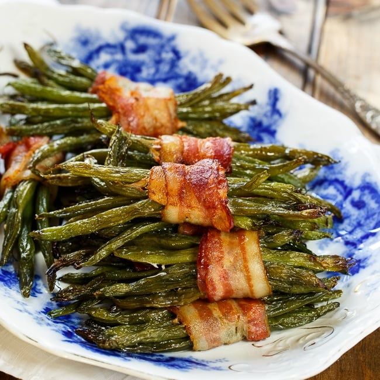

Green Bean Bundles

Ingredients:
- 1 pound of whole green beans
- 1 pound of bacon, cut in half (make shorter strips)
- 1 cup brown sugar
- 1/2 cup melted butter
- 1 teaspoon garlic salt (or crushed garlic cloves)
Steps:
- Preheat oven to 400F.
- Snap ends of green beans. Keep lengths as similar as possible.
- Group 4 to 6 beans together and roll them in a strip of bacon. Hold each bundle together with a toothpick.
- Place bundles flat in a caserole dish or Pyrex pan.
- Mix melted butter, brown sugar, and garlic together and pour over the bundles.
- Cover pan in foil and place in oven. Bake for 45 minutes.
- Remove foil and continue baking for 5 to 15 minutes to finish the bacon and remove excess liquid.
Return to main page